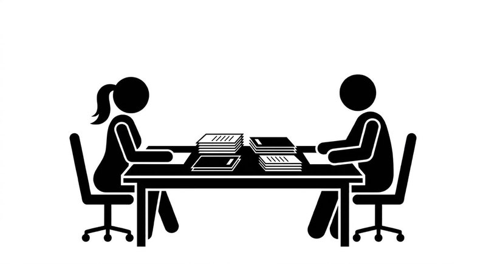
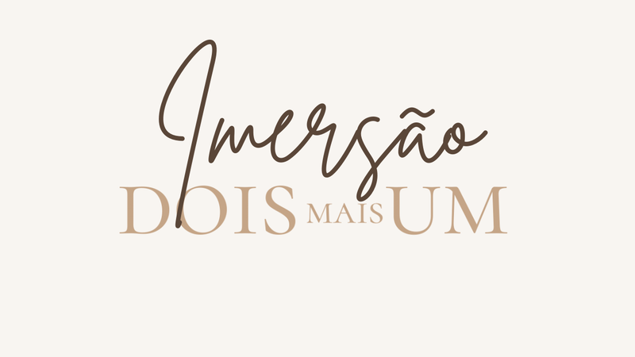
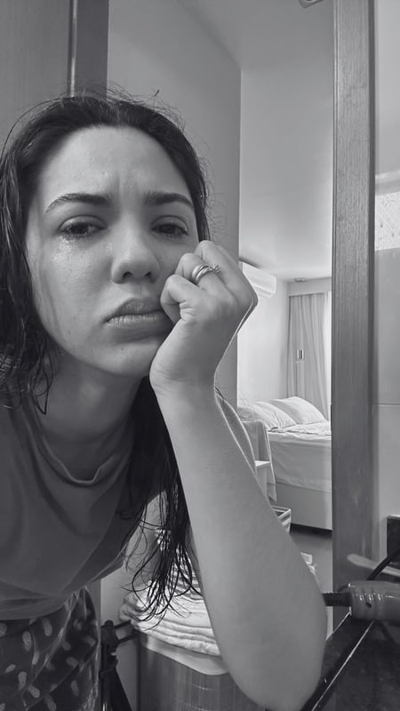
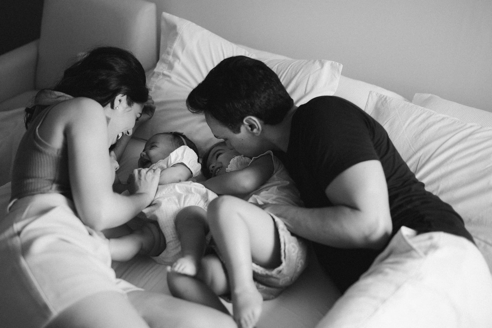
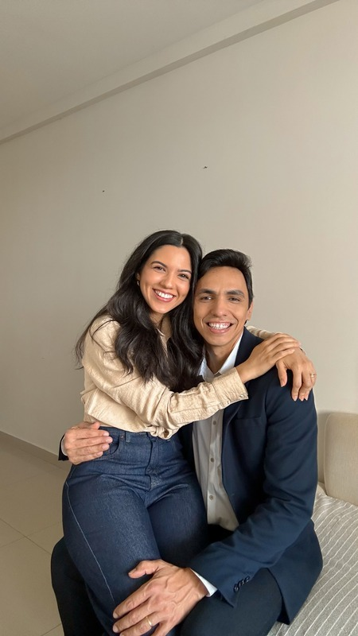
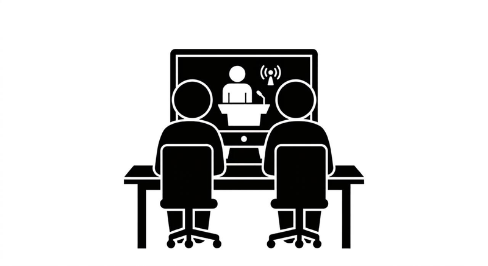
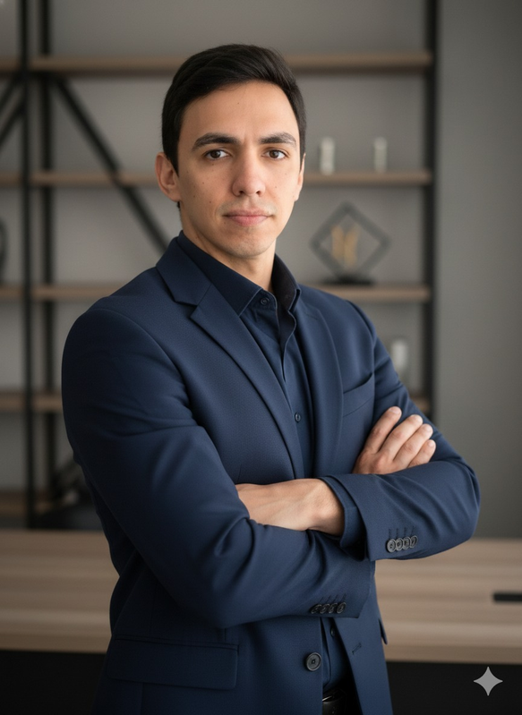
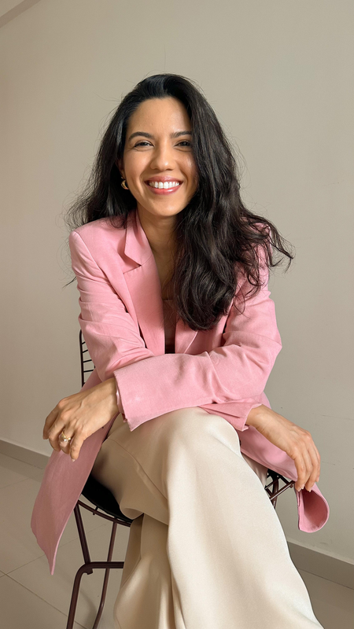

Nessa fase você:
- ✅ Recebe os materiais necessários para fazer o encontro financeiro.
- ✅ Instruções práticas de como seguir o mês até a imersão.
- ✅ Veja resultados já nos primeiros dias.

Evento ao vivo dia 28/11 das 14:30 às 18:30
✅ Em apenas 4 horas, descubram como transformar a relação de vocês com o dinheiro, alinhar decisões e construir um planejamento financeiro que funcione para os dois.
Vocês até tentam se organizar... mas parece que não importa o que façam, o ciclo se repete mês após mês
Na nossa lua de mel, até água de coco na praia precisava caber no orçamento! Gastamos mais do que podíamos na festa e não queríamos começar o casamento endividados.
E eu tinha vergonha daquela situação:
Como um administrador e uma contadora tinham chegado àquele ponto?
Como recém-casados, vieram as responsabilidades. Somado a isso, a vontade de empreender juntos. Pegamos um empréstimo para realizar meu sonho de ter uma loja de roupas. Mas gastamos quase todo o dinheiro na estrutura e recorremos ao cartão de crédito para comprar os produtos.
Poucos meses depois, a loja quebrou e nossas dívidas ultrapassaram R$ 100 mil.
O sonho de empreender acabou se transformando em uma dívida de mais de 100 mil reais.
Eu entrei em depressão. Não era apenas um sonho que tinha dado errado. Para mim, era um FRACASSO TOTAL. Não conseguia trabalhar, cuidar da casa e ainda sentia que tinha colocado todo o peso do meu erro nas costas do meu marido.
Mas não estávamos sozinhos. Oramos, reconhecemos nossos erros e pedimos ajuda a Deus. Com Sua misericórdia, estratégias, disciplina e muita força, conseguimos sair daquela situação.

Os anos passaram, melhoramos nossas planilhas e parecia que tudo estava sob controle. Até que nossa primeira filha, Chloe, nasceu. Naquele mesmo período, clientes do Michael atrasaram, um deles cancelou o contrato e nossa receita despencou.
Sem reserva financeira, voltamos ao cartão de crédito e precisamos usar todo o décimo terceiro para quitar as dívidas e adaptar nosso padrão de vida.
Aprendemos que sair das dívidas era apenas parte do caminho.
Precisávamos estar preparados para os imprevistos.
Mais tarde, nossa situação melhorou, os contratos voltaram e tivemos nossa segunda filha, Sophie. Dessa vez, tínhamos começado a construir uma reserva de segurança.

Aos seis meses, Sophie teve uma reação alérgica ao ovo e precisou de atendimento médico. Médicos, exames, especialistas e medicamentos foram consumindo nossa reserva, que ainda era pequena. Pouco a pouco, o dinheiro acabou.
Foi quando realmente precisamos dela que entendemos o quanto era importante ter construído uma reserva.
A vida pode trazer imprevistos que não conseguimos controlar. Mas podemos nos preparar melhor para enfrentá-los.
Mesmo em meio às nossas próprias dificuldades, ajudávamos outros casais com suas finanças. Um deles chegou até nós com dívidas em 14 cartões de crédito. Pensamos que bastaria apresentar nossa planilha.
Mas descobrimos algo muito maior: eles não conseguiam conversar sobre dinheiro sem brigar. Quanto mais ela falava, mais ele se fechava.
Orientamos que ela parasse de insistir e entrasse em oração. Poucos dias depois, aquele homem estava chorando e reconhecendo seus erros. "Só Deus para fazer algo assim", foram as palavras dela.
Ali entendemos que o problema financeiro de um casal nem sempre está apenas nos números.
Em outubro de 2025, nossa pastora nos aconselhou a orar sobre a possibilidade de nos unirmos profissionalmente. Inicialmente, achei desafiador demais. Mas, em maio de 2026, resolvemos buscar a direção de Deus juntos.
Começamos a enxergar de outra maneira a realidade dos casais endividados e a necessidade de ajudá-los. Parecia um pedido de socorro!

Em junho de 2026,
nasceu a Dois Mais Um.
Mesmo com menos de 300 seguidores, os primeiros casais começaram a chegar e as transformações aconteceram. Em agosto, fomos convidados pela nossa igreja para realizar uma imersão com casais de líderes e pastores. Os testemunhos vieram ali mesmo.
Vocês vão sair da imersão sabendo como:
Menos improviso, mais clareza e decisões construídas juntos.
Tudo se resume a 3 fases simples que se complementam para preparar vocês antes, durante e depois do encontro ao vivo.



Tenha acesso a tudo isso por uma condição especial:
De R$400 por:
12x R$25
ou R$ 247 à vista.
Quero minha vaga com desconto ➔Garantia de 7 dias: 100% do dinheiro de volta.

seumentor
suamentoraA partir da experiência com empresas, identificou como muitos desafios financeiros também se repetiam dentro dos casamentos e das famílias. Iniciou os atendimentos voltados à organização financeira de casais, levando sua experiência profissional para a realidade familiar.
Participou do desenvolvimento dos materiais e das ferramentas utilizadas nos atendimentos. Trouxe um olhar feminino para a análise das decisões financeiras e para a dinâmica do casal. Passou a atuar diretamente nos atendimentos, complementando o trabalho de Michael e fortalecendo a identificação das esposas durante o processo. Contribui para integrar a organização financeira à realidade e às necessidades dos casais.
Duas formações, experiências complementares e
Unimos Administração e Contabilidade à experiência profissional e à vivência de mais de 10 anos de casamento para desenvolver uma abordagem que olha para as finanças do casal de forma integral: comportamento, princípios bíblicos e organização financeira.
é ajudar casais a tomarem decisões em unidade, organizarem seus recursos e construírem uma vida financeira alinhada aos seus valores e propósito.
Acesse as perguntas frequentes
Não! A imersão também é para casais que ganham bem, mas não conseguem guardar dinheiro, não têm um orçamento organizado, não possuem uma reserva de segurança ou não conseguem alinhar suas decisões financeiras.
Sim! Apesar da importância da planilha, ela não resolve sozinha os problemas financeiros de um casal. Por isso trabalhamos com 3 pilares: comportamental, espiritual e organização financeira.
Além da participação ao vivo, até 3 dias após o evento, iremos disponibilizar a gravação da imersão e vocês terão acesso por 30 dias.
Sim, você até pode participar, mas a imersão foi toda pensada para o casal, por isso seu aproveitamento não será de 100%.
Sim, esse é um dos pontos principais que trabalhamos no pilar comportamental. Na imersão vocês vão aprender a lidar com as diferenças sobre dinheiro em casal.
Sim! Vamos construir o orçamento de vocês ao vivo, utilizando as informações levantadas no encontro financeiro, que será antes do evento. Todas as informações para realizar o encontro estarão disponíveis imediatamente dentro da plataforma.
Sim. Durante a imersão, vamos apresentar estratégias para organizar as dívidas e entender caminhos possíveis. Porém, cada família tem uma realidade financeira diferente e, em situações mais específicas, pode ser necessário um planejamento individualizado.
Assim que seu pagamento for aprovado, você recebe acesso imediato à plataforma Hotmart. Pode assistir pelo celular, computador ou tablet, quando e onde quiser.
Sim. Você terá acesso à área de membros e a uma equipe de suporte preparada para responder suas dúvidas dentro da plataforma.
Você tem garantia blindada de 7 dias. Se não gostar, pode pedir 100% do dinheiro de volta. Sem letras miúdas, sem enrolação.